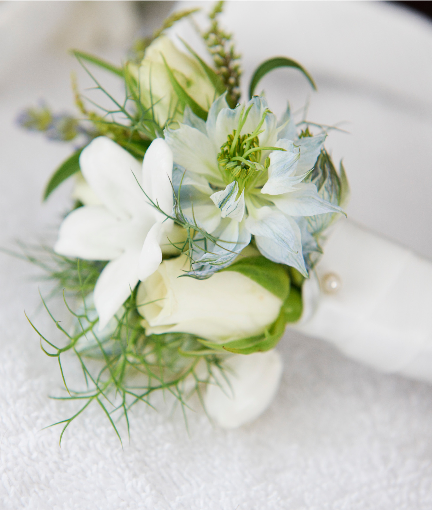

Weddings
“Music is the literature of the heart, commencing where speech ends.”
Music is such an important part of your celebration and Celestia Music can provide a wonderful choir, an organist and so much more, to perform classics as well as your special requests.
Contact Joya about a wedding